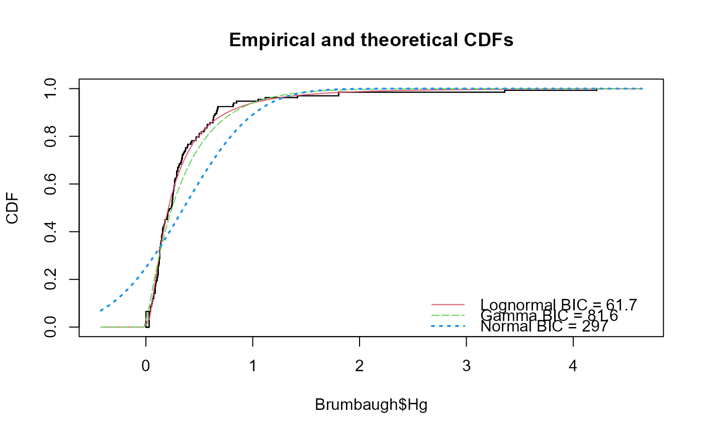
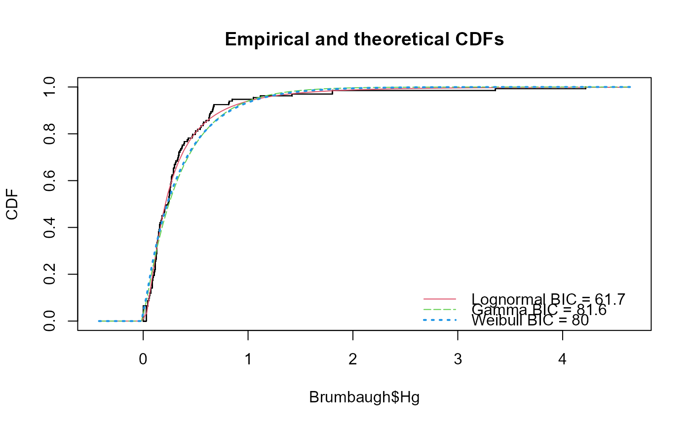
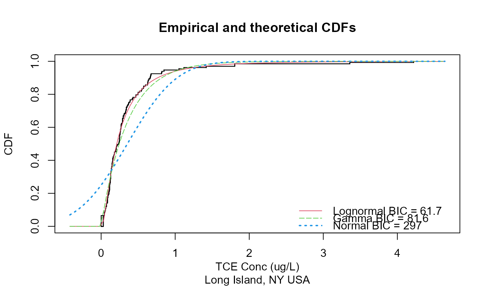

Plots the empirical cdf and cdfs of three theoretical distributions, fit by maximum likelihood estimation (MLE).
cenCompareCdfs(y.var, cen.var, dist3 = "norm", Yname = yname)
| y.var | The column of y (response variable) values plus detection limits |
|---|---|
| cen.var | The column of indicators, where 1 (or |
| dist3 | Name of the third distribution to be plotted, default is |
| Yname | Optional – input text in quotes to be used as the variable name. The default is the name of the |
prints a plot of the empirical CDFs with BIC value for each distribution.
Helsel, D.R., 2011. Statistics for Censored Environmental Data using Minitab and R, 2nd ed. John Wiley & Sons, USA, N.J.
Delignette-Muller, M., Dutang, C., 2015. fitdistrplus : An R Package for Fitting Distributions. Journal of Statistical Software, 64, 1-34. http://www.jstatsoft.org/v64/i04/.
# With Weibull distribution cenCompareCdfs(Brumbaugh$Hg,Brumbaugh$HgCen,dist3="weibull")# Using an distribution not supported by this function (yet) # you will get an error message if (FALSE) cenCompareCdfs(Brumbaugh$Hg,Brumbaugh$HgCen,dist3="beta") # With Yname specified cenCompareCdfs(Brumbaugh$Hg,Brumbaugh$HgCen,Yname="TCE Conc (ug/L)\nLong Island, NY USA")